Congratulations! You made it to module 5. Welcome this time to the wonderful world of HTML5 forms. There have been no improvements since 1997 to HTML forms.
HTML5 this time comes with a set of new input fields for entering dates, colors, entering phone numbers, URLs, and so on. New attributes related to form validation have also been introduced, and they are related to a new build-in validation system that make things easier than before without the need to use JavaScript. However, JavaScript validation API is also available for people who would like to write their own customized validation system. These additions are very handy when used on mobile devices but raised many critics from Web designers, mainly related to their desktop implementations.
The course discusses all the cases and recommend solutions and good practices. Of course, like usual, many examples will be provided that you can run directly this time in the course pages, but also as standalone examples hosted on the JS Bin Web site. If you try to modify them or creates your own examples, please share in the discussion forums as usual. Have fun!
With HTML5, forms, which had shown little improvement since 1997, evolved considerably. To achieve this, Web developers relied on many popular JavaScript frameworks for validating input formats, providing various input GUIs, such as calendars for dates, sliders, etc. Frameworks such as jQueryUI, Dojo, and Sencha, all provide a widget set for improving forms. Furthermore, it was time to take into account the specifics of mobile web applications, where the GUI of a date chooser cannot be the same as a 400x400 pixel wide calendar on a desktop. Contextual virtual keyboards provided the way forward on smartphones and tablets thanks to Apple, Google and others.
Examples of contextual keyboards are shown above; they differ depending on the type of <input> fields in the <form>. In the examples, we can see: email, URL, and phone number. Look at the different keyboard layouts. The last picture is a date picker from an IOS phone.
There is a lot of course content covered this week, and before we get into all the details of the elements and attributes introduced by HTML5, we suggest playing with running examples of full featured forms.
This example was created by a learner (by Mels Le N.) from a previous version of this course. It uses the geolocation API presented in Module 6 for auto-filling the address input fields.
Feel free to look at the source code in the JS Bin:
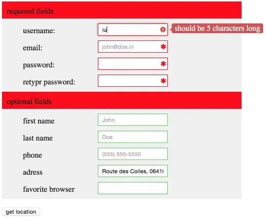Input elements, in particular the elements introduced by HTML5, can be used as widgets to control the behavior of a Web application. In this situation, they do not need to be inside a <form> element. We just bind event listeners to them and we use them as client-side widgets.
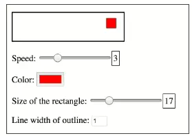GUI: Graphical User Interface
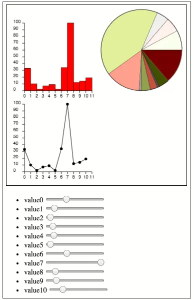
The example used in the video is available online at JSBin. A screenshot of the resulted form is shown on the right.
Forms are a way to get user input which is sent to a remote server. This section of the course focuses on the HTML5 additions to forms, and as such will only cover the client-side part.
On the server side, you may have PHP, Java, C#, Ruby, Python, etc. components. There are several ways to collect server-side data from a form in a Web page: REST Web services, servlets, Microsoft ASP pages, etc.
On the client side, the forms indicate to which server and how the data should be sent, using the action and method attributes respectively. A <button type=“submit”> or an <input type=submit> field is used to submit the form content.
For example: <form action=“myServerCode.php” method=“POST”>…</form>. Here, we set the URL of the server side code (myServerCode.php), and the HTTP method that will be used by the browser for sending the form content (POST).
Another approach is to use JavaScript for sending the form content with Ajax. This is covered in W3Cx HTML5 Apps and Games course.
This week, let’s study the elements and attributes offered by HTML5, as well the HTML5 form validation API.
The example shown in the video shows some best practices for writing accessible forms and does some basic layout using CSS.
The following additional example shows the same best practices but presents a more complete form with CSS rules to make a nice layout. See it online, and illustrated with the screenshot below. It is adapted from this very good MDN’s article “How to structure a web form”.
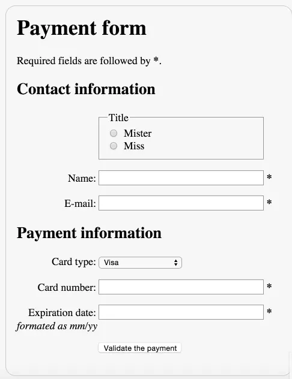Forms are commonly used to enable user interaction in Web sites and Web applications. For example, they are used for login, registering, commenting, and purchasing.
Since HTML5 provides functionalities to assist with accessibility, developers should make a concerted effort to mark up Web based forms. The following two guidelines are to give you a good start to make your forms accessible:
Examples for each of these two basic guidelines are given in the following pages.
The WAI Web site hosts a Forms tutorial where to find all guidelines to follow in order to make your forms truly accessible: labeling controls, grouping controls, form instructions, validating input, user notifications, multi-page forms, and custom controls.
Forms can be visually and cognitively complex and difficult to use. Accessible forms are easier to use for everyone, including people with disabilities.
Form fields and other form controls usually have visible labels, such as “E-mail Address:” as the label for a text field (see figure below).
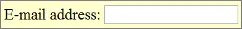When these labels are marked up correctly, people can interact with them using only the keyboard, using voice input, and using screen readers. Also, the label itself becomes clickable, which enables a person who has difficulty clicking on small radio buttons or checkboxes to click anywhere on the label text.
Whenever possible, use the label element to explicitly associate text with form elements. The for attribute of the label must exactly match the id of the form control.
Click on the label, not on the input field to see the effect.
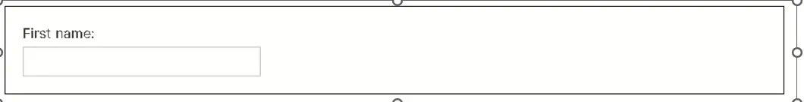<label for="first_name">Your First Name</label> <input id="first_name" type="text" name="fname"/>
Note that you can also include the <input> element inside the <label>…<label> element, and also add a <span lang=“en”> for example, to indicate the language used in the label. Sometimes, nesting labels and inputs can also make CSS styling easier and produce better results with screen readers.
<label for=first_name"><span lang=en">Your First Name</span> <input id="first_name" type="text" name="fname"/> </label>
Click on the label “Subscribe to newsletter” to see what this does.
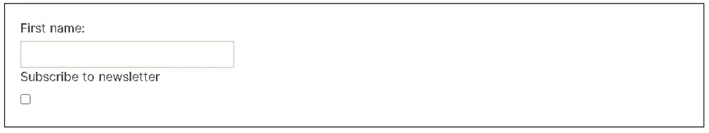<label for="firstname">First name:</label> <input type="text" name="firstname" id="firstname"><br> <label for="subscribe">Subscribe to newsletter</label> <input type="checkbox" name="subscribe" id="subscribe">
The label of a <button> element is set inside the element and can include markup. This allows advanced accessibility hints to be included, such as marking up language change. Example: <button>Mon <span lang=“fr”>bouton</span></button>,for a button with a label in French.
When using the <input> element to create buttons, the label is set in the value attribute of the element. Example: <input type=“submit” value=“Please submit”>, renders a text button.
<button type="submit">Submit</button> <button type="button">Cancel</button> <input type="submit" value="Submit"> <input type="button" value="Cancel">
These give the same results:
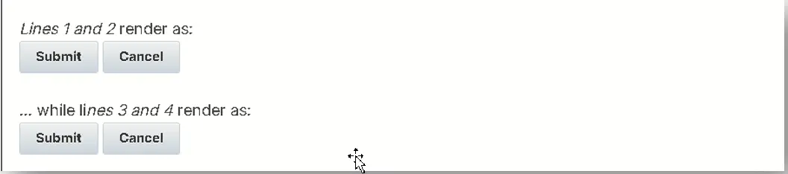Lines 1 and 2 render as: Submit Cancel
… while lines 3 and 4 render as:
<label for="address">Enter your address:</label><br> <textarea id="address" name="addresstext"></textarea>
Groupings of form controls, typically groups of related checkboxes and radio buttons, sometimes require a higher level description. Grouping related form controls makes forms more understandable for all users, as related controls are easier to identify.
Grouping needs to be carried out visually and in the code, for example, by using the <fieldset> and <legend> elements to associate related form controls. The <fieldset> identifies the entire grouping and <legend> identifies the grouping’s descriptive text.
In the example below, there are three radio buttons that allow the user to choose an output format. Radio button groups should always be grouped using <fieldset>.
Output format:
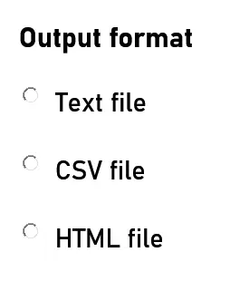<fieldset>
<legend>Output format</legend>
<div>
<input type="radio" name="format" id="txt" value="txt" checked>
<label for="txt">Text file</label>
</div>
<div>
<input type="radio" name="format" id="csv" value="csv">
<label for="csv">CSV file</label>
</div>
[...]
</fieldset>
In the example below, there are three checkboxes that are all part of an opt-in function for receiving different types of information.
I want to receive
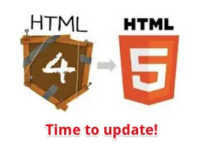<fieldset>
<legend>I want to receive</legend>
<div>
<input type="checkbox" name="newsletter" id="check_1">
<label for="check_1">The weekly newsletter</label>
</div>
[...]
</fieldset>
WAI-ARIA provides a grouping role that functions similarly to fieldset and legend. For example, a div element can have role=group to indicate that the contained elements are members of a group.
WAI-ARIA roles are very important in the accessibility world, and we invite you to see an example provided in the associated WAI tutorial. See also this MDN’s article about about WAI-ARIA roles.
In this section, we briefly present the input types, attributes, and elements related to the forms that came with HTML5. Details are given later, illustrated by multiple interactive examples.
Compared to HTML4, HTML5 introduced 13 new input types, covering most of the needs of Web developers. HTML5 packages some of the “form best practices” in its specification. Web browsers providing native implementation give a boost in performance, and reduce the size of JavaScript embedded in complex Web pages.
MDN’s Web docs article on <input> types lists all input types and highlights those that came with HTML5.
Now, let’s play with some of these input types and attributes.
For years, we used hundreds of lines of JavaScript for selecting colors. Now, it’s bundled in the browser!
Here is how it looks on some mobile devices:
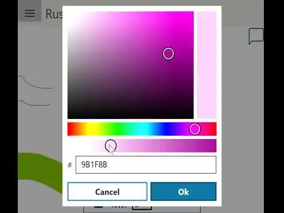<!DOCTYPE html> <html lang="en"><head>...</head> <body> Choose a color : <b><input type="color" value="#FF00F"/></b> </body> </html>
Note: In this chapter we are simplifying the examples, as we usually embed input elements in a <form>…</form>.
Try <input type=“color”> online with this JSBin example. Or do it here in your browser: just click on the purple square below:
Here is the result on Google Chrome (works with other browsers too, though the look and feel may differ):
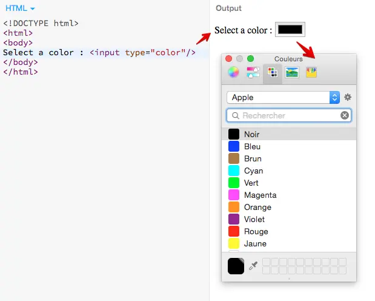The <input type=“color”> can fire change or input events. Here is an example that changes the background color of the page when a color is chosen. Try it online at JSBin.
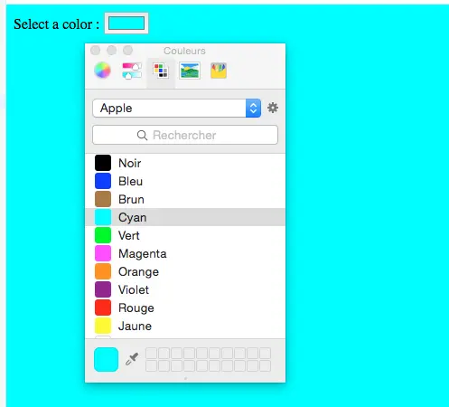<!DOCTYPE html>
<html lang="en"><head></head>
<body>
Select a color : <input type="color" id="colorChooser"/>
<script>
var colorInputField = document.querySelector("#colorChooser");
colorInputField.addEventListener('input', function(evt) {
document.body.style.backgroundColor = this.value;
}, false);
</script>
</body>
</html>
By default, the color selector offers many options that may either frighten some users or just not be appropriate for the purpose of the application.
Good news: it is possible to restrict the choices, and also simplify the user interface, by using a <datalist> with some <option> elements inside.
Example: click the black rectangle on the right. The following should be displayed:
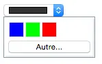<input type="color" value="#333333" list="colors"> <datalist id="colors"> <option>#0000FF</option> <option>#00FF00</option> <option>#FF0000</option> </datalist>
Note that the id of the <datalist> element should be the same as the value of the list attribute of the input field.
The main criticism that Web designers make about this element is related to its default appearance being strongly dependent on the browser and its underlying operating system. Changing the look and feel is not possible, except with the use of the options we saw in the previous sections of this page. This problem is also true for other input elements that renders as complex widgets, like <input type=“date”> and its variants.
Another problem is that there is no way to control where the dialog that contains the color chooser will appear - no positioning via CSS or JavaScript is possible. The specification does not say anything about how to position it over the page, thus the result is vendor specific.
The solution proposed by the W3C and its contributors is called Web Components, a new approach for designing HTML5 widgets, that is covered in the W3Cx HTML5 Apps and Games course.
For years, date and time pickers in HTML forms made Web developers rely heavily on JavaScript based widgets. The process is simpler in HTML5, which provides a special control to handle this specific kind of data natively.
Below are a few screenshots of the HTML5 date picker on several mobile devices. Note that the native date pickers of the operating systems are used:
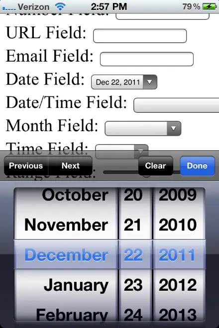 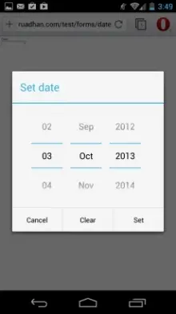The problem is different on a desktop. While it’s great to have native support for a date picker, Web developers would sometimes prefer 100% control over the look and feel of the date picker widget. For this purpose, the solution undoubtedly lies with the new Web Components (a way to make custom reusable widgets in HTML/CSS/JS), to be detailed in the W3Cx HTML5 Apps and Games course
Why don’t you try it yourself? Just click on this input field: (not in github)
With Firefox, it shows this date picker widget:
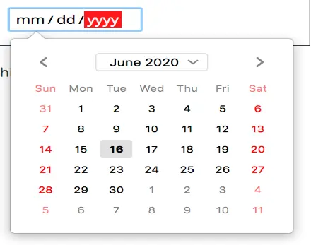On non-supported browsers, it defaults to an <input type=“text”> input field.
The default usage is something like:
<label for="birthday">Choose birthday party date: </label> <input type="date" id="birthday">
Result: Choose birthday party date:
Most of the time you will add other attributes to give some restrictions (choose a date in the past, in the future, only on a Saturday, etc.).
The <input type=“date”> comes with several useful attributes. In particular the value, min and max attributes are used to propose a default date, a min and a max date, or for defining an interval of acceptable values.
Try this example: just click the next input field or try it online on JSBin if you want to tweak the source code:
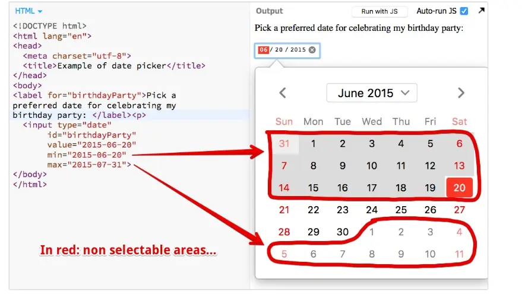... <input type="date" id="birthdayParty" value="2015-06-20" min="2015-06-20" max="2015-06-30"> ...
Using the value attribute for setting a date, and using step=7 for example, will make acceptable only the day of the week that corresponds to the value’s day (e.g.: only Mondays). Using step=2 will make acceptable only every other day, etc.
Example: we want to celebrate birthday parties only on Saturdays, check this on JSBin! (screenshot from Chrome).
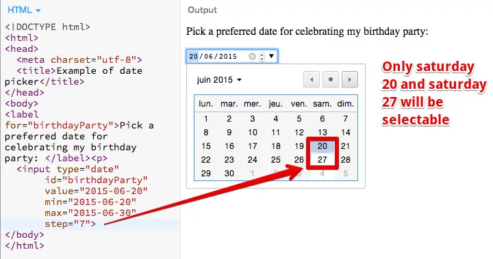<input type="date" id="birthdayParty" value="2015-06-20" min="2015-06-20" max="2015-06-30" step="7">
Online example at JSBin (screenshot from Chrome).
<input type="date" id="birthdayParty" list="birthdayPartyPossibleDates" value="2015-06-20"> <datalist id="birthdayPartyPossibleDates"> <option label="Best for me">2015-06-20</option> <option label="Ok for me too ">2015-06-27</option> <option label="This one is a sunday, hmmm">2015-06-28</option> </datalist>
The list attribute of the input element must match the id attribute of the datalist element.
If you use the min, max, or step attributes with a list attribute, it may filter the restricted list even more. Check this example on JSBin (tested with Google Chrome), that has a restricted list of three elements, one of which is filtered because it is not in in the min/max range.
Here is an interactive example at JSBin where you can change the type of date/time chooser. It also shows how to listen to the input event when a date/time is chosen.
<!DOCTYPE html>
<html lang="en"><head>...</head>
<body>
Testing the new date input field.<p>
Choose a date/time : <input type="date" id="date" /></p>
<p>
You picked: <span id="pickedDate"></span>
</p>
After you have tried the first example, change the value of the "type" attribute to:
<ul>
<li>datetime</li>
<li>datetime-local</li>
<li>time</li>
<li>week</li>
<li>month</li>
</ul>
And see the result.
<script>
var field = document.querySelector("#date");
var result = document.querySelector("#pickedDate");
field.oninput = function(evt) {
var date = this.value;
pickedDate.innerHTML = "<b>"+date+"</b>";
}
</script>
</body>
</html>
Lines 20-26 show how we can detect a date change using JavaScript.
The object returned to the input event handler has a useful property named valueAsDate. This is a JavaScript date object that can be compared to other JavaScript date objects, in particular to the date of the day we can get with var date = new Date();
The following example at JSBin shows how to ascertain whether a date is in the past or in the future:
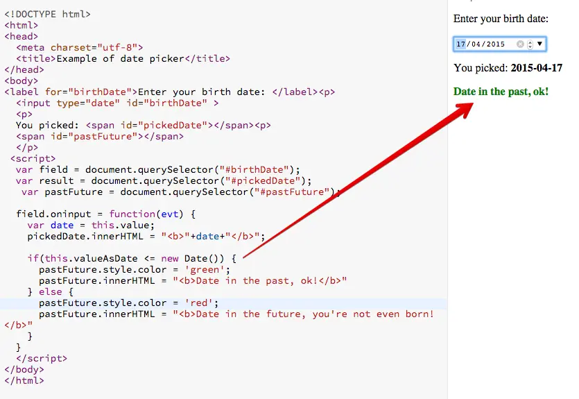While if we enter a date in the future:
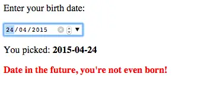<body>
<label for="birthDate">Enter your birth date: </label><p>
<input type="date" id="birthDate" >
<p>
You picked: <span id="pickedDate"></span><p>
<span id="pastFuture"></span>
</p>
<script>
var field = document.querySelector("#birthDate");
var result = document.querySelector("#pickedDate");
var pastFuture = document.querySelector("#pastFuture");
field.oninput = function(evt) {
var date = this.value;
pickedDate.innerHTML = "<b>"+date+"</b>";
if(date.valueAsDate <= new Date()) {
pastFuture.style.color = 'green';
pastFuture.innerHTML = "<b>Date in the past, ok!</b>"
} else {
pastFuture.style.color = 'red';
pastFuture.innerHTML = "<b>Date in the future, you're not even born!</b>"
}
}
</script>
</body>
Lines 17-23 show how we can compare the date picked in the calendar widget with the current date. Note that we can compare any given dates using JavaScript. To check that the chosen date is before 2000 we would do this:
if(this.valueAsDate <= new Date(2000,1,1)) {
...
}
<input type="datetime">, "week", "month", "datetime-local", etc.
The HTML5 specification indicates that we can use <input type=“date”> and <input type=“time”> while for some years (before the specification became a frozen standard in October 2014), other variants were also present, such as type=datetime, datetime-local, month and week.
Here is an interactive example at JSBin where you can change the type of date chooser and try all the different possible values for the type attribute of date pickers.
<input type=“time”>
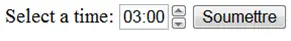 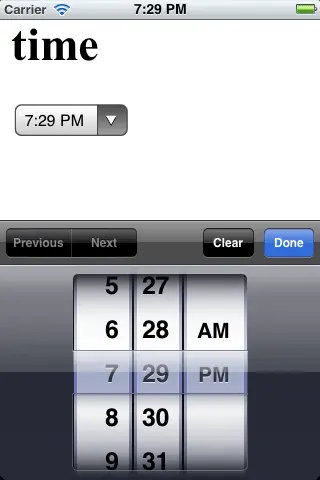<input type=“datetime”>
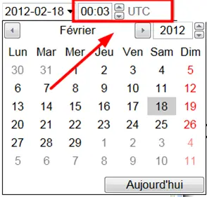 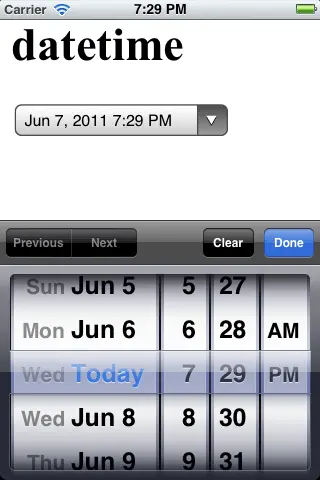<input type=“datetime-local”>
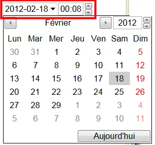<input type=“week”>:
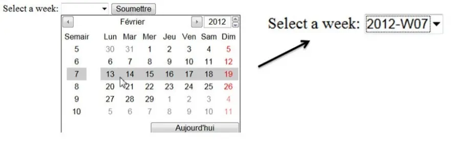<input type=“month”>:
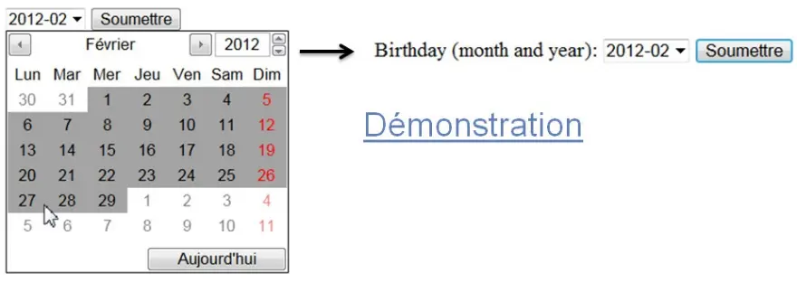 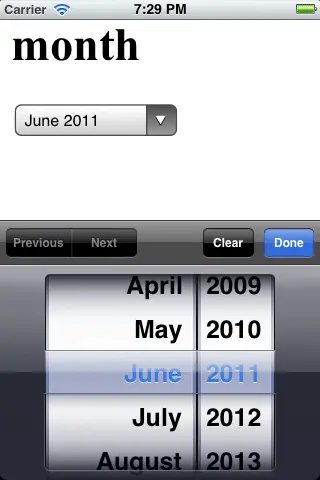Let’s study 4 input types: email”, “tel”, “URL” and “search”.
<input type=“email”>
This input type is relatively straightforward to use. In mobile applications, this new input type pops up a keyboard layout adapted to email input. Note the “@” key, the “.” key, etc.
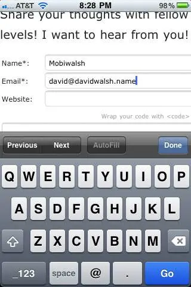This input type is very interesting as it provides default validation behaviors:
If the value entered looks like an email address (contains a “@”…), the field is valid, and gets the pseudo CSS class :valid
If the value entered does not contain an “@”, and does not look like an email address, the field is invalid and gets the pseudo CSS class :invalid
See the next example to see this in action. More details will be presented in a later section dedicated to form validation.
Typical use: Online example at CodePen
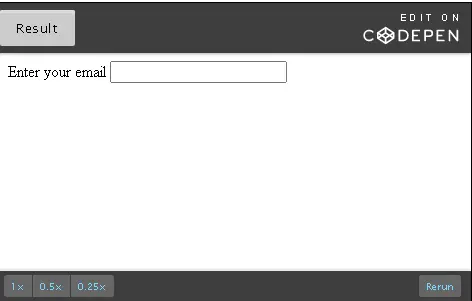Try it on your browser:
<!DOCTYPE html>
<html lang="en">
<head>
<meta charset="utf-8">
<title>Example of input type=email</title>
<style>
input:invalid {
background-color:pink;
}
</style>
</head>
<body>
<label for="email">Enter your email </label>
<input type="email" id="email">
</body>
</html>
Note the CSS rule that turns the background color of the email input field to pink if a user enters an invalid address (lines 7-8). Also note that the validation is based only on matching a regular expression (the address should contain a “@”, a “.”, etc.). It does not check if the address is an existing one.
This input field is really useful on smartphones and tablets, as it makes the browser pop up a keyboard layout suitable for entering phone numbers:
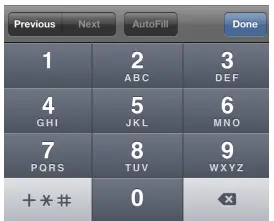 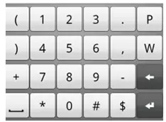This input type is often used with the new placeholder and pattern attributes that are detailed in another section of this course. It is supported by all recent major Web browsers, on mobile devices and desktops.
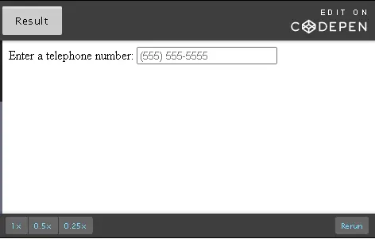Try it in your browser (we used the same CSS for changing the background- color when the input value is invalid):
<!DOCTYPE html>
<html lang="en">
<head>
<meta charset="utf-8">
<title>Example of input type=tel</title>
<style>
input:invalid {
background-color:pink;
}
</style>
</head>
<body>
<label for="tel">Enter a telephone number:</label>
<input type="tel" id="tel"
placeholder="(555) 555-5555"
pattern="(?d{3})?[-s]d{3}[-s]d{4}.*?)"/>
</body>
</html>
This input field is really useful on smartphones and tablets, as it makes the browser pop up a keyboard layout suitable for entering URLs:
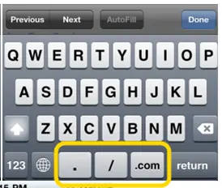This field is also compatible with the validation API (more on this in another section).
Here is an online example that shows the use of the placeholder and pattern attributes
for entering only URLs that start with ftp:// or https://
Or try it here in your browser:
Enter a URL (default validation):
Enter a URL (custom validation, must start with http, https or ftp):
<!DOCTYPE html>
<html lang="en">
<head >
<meta charset="utf-8">
<title>Example of input type=url</title>
<style>
input:invalid {
background-color: lightPink;
}
</style>
</head>
<body>
<label for="url1">Enter a URL (default validation):</label>
<input type="url" id="url1"/>
<p>
<label for="url2">Enter a URL (custom validation, must start with http, https or ftp):</label>
<input id="url2" type="url" placeholder="https://www.domain.com"
pattern="(http|https|ftp)://[a-zA-Z0-9-./]*"/><p>
</body>
</html>
Lines 16-17 show the use of a pattern attribute with a JavaScript regexp that accepts only URLs starting with http, https or ftp. More details on the pattern attribute are given in the section that presents the new HTML5 form attributes.
The search type is used for search fields (i.e., for a search
engine). A search field behaves like a regular text field, except that
it may provide some feedback GUI for stopping the current request and
emptying the search field, or it may provide a drop-down list of recent
search results.
The specification does not state what the GUI should look like, so
current implementations show variations in the look and feel.
<label for="search1">Simple search: </label>
<input type=search id="search1">
<p>
<label for="search2">Search with attribute <code>results=5</code> (try with Safari): </label>
<input type=search id="search2" results=5>
Results on Chrome and Opera desktop - notice the small cross on the right when one enters a value:
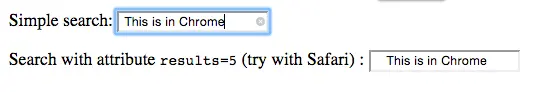Same example with Safari desktop, this time the second line with an attribute results=5 shows a small icon on the left:
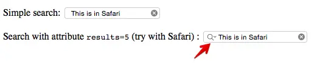Example that shows a drop down list of recent searches (Safari screenshot borrowed from this excellent site about HTML5 forms that is worth reading):
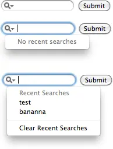<!DOCTYPE html>
<html>
<head>
<meta charset="utf-8">
<title>Example of input type=email</title>
<style>
input:? {
background-color:pink;
}
input:?? {
background-color:lightGreen;
}
</style>
</head>
<body>
<label for="email">Enter your email:</label>
<input type="email" id="email">
</body>
</html>
This input field is useful for entering numerical values (integer or float), but not for entering zip codes. On desktop implementations and on some mobile implementations, it provides a user interface with small vertical arrows for incrementing/decrementing the current value, while on mobiles it will display a numeric keyboard.
For zip codes, a <input type=“text” pattern=“……”> is preferable. See examples given in the pattern attribute section of this course.
Example: <input type=“number” value=“25” min=“0” step=“5” max=“500”/>
Examples on desktop (the width will be adjusted depending on the min and max attributes):
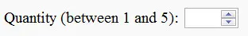<input type="number" value="25" min="0" step="5" max="500"/>
This field accepts specific attributes max, min, step, value (default displayed value).
This input type is very interesting as it provides default validation behaviors:
If the value entered using a keyboard is not a valid number, or is not in the range defined by the min and max attributes, the field is invalid and gets the pseudo CSS class :invalid.
If the difference between the value you enter and min is a multiple of step, then it gets the CSS pseudo class :valid , otherwise it will be invalid. Example: if min=1 and step=5, the field will be valid with value=1, 6, 11, 16 etc. if min=0, with value=0, 5, 10, 15 etc.
WARNING 1: Using a step attribute with an integer value will make the arrows increment/decrement the current value with the step value, and [make the input field valid only when ]the difference between the value you enter and min is a multiple of step.
WARNING 2: by default, omitting the step attribute is equivalent to step=“1”, [so for entering float values, it is necessary to use step=“any” or step equal to a floating point value such as step=“0.1”].
With step=“any”, floating point values are valid, but vertical arrows will increment/decrement the value by one. If step=“0.1”, arrows will increment/decrement by 0.1, etc.
Online example in CodePen try changing the attribute values, use step=“any” and try float values, etc).
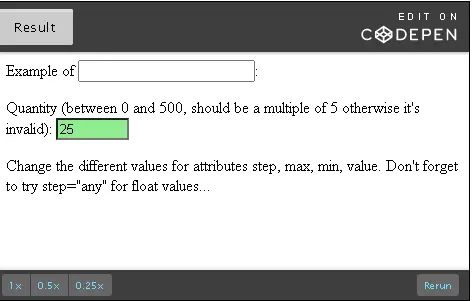Or, do it here in your browser (Manually enter a value that is not in the range, or not a multiple of 5, try the up and down arrows, etc.):
Quantity (between 0 and 500, should be a multiple of 5 otherwise it’s invalid):
<!DOCTYPE html>
....
<style>
#number:invalid {
background-color:pink;
}
#number:valid {
background-color:lightGreen;
}
</style>
</head>
<body>
Example of <code><input type=number></code>:<p>
<label for="number">Quantity (between 0 and 500, should be a multiple of 5
otherwise it's invalid): </label>
<input type="number" id="number" value="25"
min="0" step="5" max="500"/>
<p>
Change the different values for attributes step, max, min, value. Don't forget to try step="any"
for float values...
</body>
</html>
This input type renders as a slider. It accepts the same attributes as the <input type=“number”> : min, max, step and value.
The basic use is to specify at least the value, min and max attributes, and eventually the step attribute, too:
<input id="slider6" type="range" min="0" max="10" step="2" value="5">
But most of the time, you will need a visual feedback that shows the current value selected by the slider.
<!DOCTYPE html>
<html lang="en">
<head>
<meta charset="utf-8">
<title>Example of input type=tel</title>
<style>
#rangeValue1 {
border:1px solid black;
padding:2px;
}
</style>
<script>
window.onload = function() {
// Called when the page is loaded, for displaying initial value in the output
printValue('slider1','rangeValue1');
}
function printValue(sliderId, outputId) {
var x = document.getElementById(outputId);
var y = document.getElementById(sliderId);
x.value = y.value;
}
</script>
</head>
<body>
<form >
<label for="slider1">Select a value:</label>
<input id="slider1" type="range"
min="100" max="500" step="10" value="150"
oninput="printValue('slider1','rangeValue1')"/>
<output id="rangeValue1"></output>
</form>
<br/>
Play with attributes: value, min, max, step...
</body>
</html>
When you click and drag the slider, it “jumps” to some snap points corresponding to the integer values of the range defined by the min and max attributes. The “size of the jumps” depends on the value of the step attribute.
Try these examples in your browser and look at their behavior:
value=5 min=0, max=10 step=1: value=12 min=10, max=50 step=4:
Note that in the previous example, the default value displayed is 14, not 12 (the value just above min plus an integer step value). 12 is not possible so it’s been “snapped” to 14.
value=5 min=0, max=10 step="0.5":
In the previous example, it’s necessary to add quotes for setting step=“0.5” (while HTML5 authorizes not using quotes for setting integer values to attributes).
value=5 min=0, max=10 step="any":
WARNING: Using a step attribute with an integer value will make the slider jump corresponding to the step value. By default, omitting the step attribute is equivalent to step=“1”.
For accepting float values, it is necessary to use step=“any”, or step equal to a floating point value, such as step=“0.5”.
Adding “ticks” to the range slider using a <datalist> element
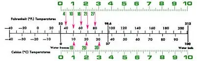<label for="slider2">value=5 min=0, max=10 step=1, ticks at 2, 4, 6, 8 and 10:</label> <input id="slider2" type="range" list="ticks2" min="0" max="10" step="1" value="5"/> <datalist id=ticks2> <option>0</option> <option>2</option> <option>4</option> <option>6</option> <option>8</option> <option>10</option> </datalist>
value=5 min=0, max=10 step=1, ticks at 2, 4, 6, 8 and 10: value=20 min=10, max=50 step=5, ticks at 0, 10, 20, 30, 40 and 50: value=5 min=0, max=10 step="0.5", ticks at 0, 0.5, 1, 2, 4, 8: value=5 min=0, max=10 step="any", ticks at 0, 5 and 10:
| - name | - form |
| - disabled* | - readonly |
| - type | - autocomplete |
| - maxlength | - autofocus |
| - readonly | - list |
| - size | - pattern |
| - value | - required* |
| - alt | - placeholder |
| - src | - multiple |
| - height | - list |
| - width | - min |
| - checked* | - max |
| - align | - step |
| - formaction | |
| - formenctype | |
| - formmethod | |
| - formtarget | |
| - formnovalidate | |
| * pseudoclasses CSS target with :disabled and :checked or :required selectors | |
| ** align is deprecated, CSS rules should be used instead |
In this chapter, we go over the form attributes that have been introduced by HTML5.
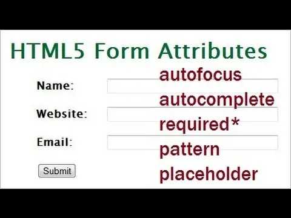We have already seen the use of pseudo CSS classes used together with the input field and form validation (pattern attribute, input:invalid CSS rule). We also briefly looked at the use of the placeholder attributes for displaying a helper message in the input field.
In this section, we cover the rest of the form attributes and provide further examples of using the previously discussed attributes.
In another part of the course, about form validation and visual feedback using CSS, we examine some of the most useful attributes in even greater detail.
This attribute is useful for putting input fields outside the form itself. The form attribute of an external input field must share the same value as the id of the form the field belongs to. This is useful when using <fieldset> elements for making the page/form layout easier.
Try this interactive example in CodePen, or try it directly in your browser:
<!DOCTYPE html> <html lang="en"> <head> <meta charset="utf-8"> <title>Example of input type=tel</title> </head> <body> <label for="yourName">Enter your name:</label> <input type="text" id="yourName" name="yourName" form="form1"/> <p> <form id="form1" action="sumit.php" method="post"> <fieldset> <legend>Choose option</legend> <label for="free">Free registering</label> <input type="checkbox" id="free"/> <label for="premium">Premium</label> <input type="checkbox" id="premium"/> <button type="submit">Send form</button> </fieldset> </form> </body> </html>
Lines 12 and 22 shows the form attribute. Make sure that its value matches the id of the form!
This attribute applies either to the <form> element or on individual <input> elements. It specifies when input fields must autocomplete the user’s input based on the user’s typing history.
Possible values of this attribute: on/off.
If applied to the <form> element, all input fields attached to the form (inside or linked to it using the form attribute), will have auto-completion set by default to the value of the autocomplete attribute of the form.
This default behavior can be overridden by setting it individually to any input field inside. In other words: it is possible to have autocomplete “on” for the form, and “off” for specific input fields, or vice-versa.
Sometimes this autocomplete behavior is disabled by default in some Web browsers, and will need to be adjusted in the preferences/settings.
This attribute targets most input types (those that allow typing in them).
Try it in your browser here:
<form submit="test.php" method="post" autocomplete="on"> ... <label for="address">Enter your address (autocomplete off, overrides the form's autocomplete=on attribute):</label> <input type="text" id="address" autocomplete="off"> <p> <label for="address1">Enter your address (autocomplete on by inheritance of the form's autocomplete=on attribute):</label> <input type="text" id="address1"> <p> <button type="submit">Submit</button> ... </form>
This attribute is useful for transferring the focus to a field other than the first field in a page/form (by default the first input field has the focus).
Attention: there must not be more than one element in the document with the autofocus attribute specified!
This example below illustrates the use of the autofocus attribute: the focus is put on the second input field of the page. It also shows the use of required, placeholder and pattern attributes.
The required attribute makes the input field invalid if kept empty.
<form>
...
<input type="text" id="test"/><p>
...
<input id="name" name="inputName"
placeholder="6 to 9 chars please..."
pattern="w{6,9}"
required
autofocus
type="text"/>
...
</form>
Important: : For “Boolean” attributes, such as autofocus, required, optional, etc., you are able to either write autofocus=“autofocus”, or just use the attribute name “autofocus” without setting a value.
Read these explanations for a complete description of the syntax of Boolean attributes.
<!DOCTYPE html>
<html lang="en">
<head><meta charset="utf-8">
<title>Example for a knowledge check</title>
</head>
<body>
<form>
<label for="studentID">Student ID (disabled field, cannot type in it): </label>
<input type="text" value="S134356" id="studentID" disabled/><p>
<label for="name">First name: </label>
<input type="text" id="firstName"
placeholder="John"
autofocus
/>
<label for="lastName">Last name: </label>
<input type="text" id="lastName"
placeholder="Smith"
autofocus
/>
</form>
</body>
</html>
This attribute works together with the new <datalist> element we already studied when we saw the color and date input fields.
This attribute’s value must match the id of a <datalist> element. It is useful for providing local auto-completion to some input fields, or for restricting the possible values on some others like <input type=date> or <input type=color>.
Here is a small code extract from a more complete example shown in the section about the new <datalist> element (see next unit).
Please try it in your browser (Type “F”, “E”, “O”, C” etc., or just click inside the field and use the drop down menu). Note that you can also enter any value; if it does not start with one of these letters it will be accepted but will not trigger auto-completion.
<form> ... <input list="browsers" id="mybrowser" /> <datalist id="browsers"> <option value="Internet Explorer"> <option value="Firefox"> <option value="Chrome"> <option value="Opera"> <option value="Safari"> </datalist> ... </form>
At lines 3 and 5, the value of the list attribute of the input field must match the one of the id of the <datalist> element.
The pattern attribute enables the validation of the user’s input on the fly (also at submission time), based on regular expressions. It applies to the text, search, url, tel, email, and password input types.
The pattern attribute follows the syntax of JavaScript regular expressions.
A must read: a good catalog of ready-to-go patterns is available at html5pattern.com, an excellent Web site that proposes plenty of JavaScript patterns for the pattern attribute of HTML5 forms. The left hand menu proposes categorized patterns for postal codes, dates, phones, etc.
You can also try this online JavaScript RegExps tester, and follow this tutorial about “using JavaScript RegExps” that has step by step exercises and explanations.
Just add a pattern attribute with a value that is the JavaScript regular expression that must match the entire string entered in the field. Note that the empty string is valid by default (except if the required attribute is used - this makes empty fields invalid).
It’s best practice to systematically add a title attribute with a value that indicates what constitutes a valid entry. More on this in the section of this course dedicated to form validation.
<input type="text" name="country_code"
pattern="[A-Za-z]{3}"
title="3 letter country code"
/>
Try this online example at JSBin or directly in your browser below:
With the previous example, until the value of the input field is equal to 3 alphabetic characters, the field is invalid.
As seen in the previous examples, we used some CSS pseudo classes for automatically setting the background-color of the input field as we type.
<!DOCTYPE html>
<html lang="en">
<head>
<meta charset="utf-8">
<title>Example of the pattern attribute</title>
<style>
input:invalid {
background-color: lightPink;
}
input:valid {
background-color: lightGreen;
}
</style>
</head>
<body>
<label for="code">Please enter a 3 letter country code:</label>
<input type="text" name="country_code"
pattern="[A-Za-z]{3}"
title="3 letter country code"
id="code"/>
</body>
</html>
Try this example online or in your browser below:
Attributes used: placeholder (for displaying a ghost example value), pattern, required (empty field = invalid)…
<!DOCTYPE html>
<html lang="en">
<head> <meta charset="utf-8">
<title>Example of use of new HTML5 input field attributes</title>
<style>
input:focus:invalid { background-color: lightPink;}
input:valid { background-color:lightGreen; }
input:required {border: 2px solid red; }
input:optional {border: 2px solid green; }
</style>
</head>
<body>
<p>Attributes used: placeholder (for displaying a ghost example value), pattern, required (empty = invalid)...
<p>
<label for="inputID">Enter a pseudo (6-12 characters): </label>
<input id="inputID" name="Name"
placeholder="Name"
pattern="w{6,12}"
required
title="6-12 characters allowed please"
type="text" />
</body>
</html>
Online example at JSBin try it in your browser:
<input id="website" name="url" type="url" placeholder="http://www.domain.com" title="http, https or ftp allowed" pattern="(http|https|ftp)://[a-zA-Z0-9-./]" />
These attributes are useful for several input types such as number, range, date and time (and other variants).
The min and max attributes are used to set ranges to input fields that accept numerical values or a date/time.
Their detailed use with these input fields have already been explained in section 5.4 of this course dedicated to these particular input field types.
<input id="mydate" name="mydate"
type="date"
min="2012-01-01"
max="2013-01-01"
value="2012-01-01"
/>
<input name="time" id="time" type="time"
min="09:00"
max="17:00"
value="12:00"
/>
<input id="range" name="range" type="range"
min="0"
max="100"
step="5"/>
The multiple attribute is used with email and file input types. It’s a Boolean attribute, so here are the different syntax possibilities:
With <input type=“email”>
With the <input type=“email”>, this attribute enables the user to enter a set of addresses, separated by a comma instead of a single address. Entering several addresses will keep the input field valid.
Or try it below in your browser: type in a list of email addresses separated by a comma, then look at the input field background color (pink = invalid, green = valid), and then submit:
<!DOCTYPE html>
<html lang="en">
<head>
<meta charset="utf-8">
<title>Jsbin</title>
<style>
input:invalid {
background-color: lightPink;
}
input:valid {
background-color: lightGreen;
}
fieldset {
border:1px solid;
padding:20px;
}
</style>
</head>
<body>
<p>This form uses: <code><input type="email"
name="myemail" <b>multiple</b>></code></p>
<form>
<fieldset>
<legend>With the multiple attribute </legend>
<label>Enter several email addresses: </label>
<input type="email" name="myemail" title="you can enter
multiple emails addresses, separated by a comma" multiple/>
<button>Submit</button>
</fieldset>
</form>
<p>
<p>This form does not use the multiple attribute:</p>
<form>
<fieldset>
<legend>Without the multiple attribute </legend>
<label>Enter several email addresses: </label>
<input type="email" name="myemail" title="only one address please!"/>
<button>Submit</button>
</fieldset>
</form>
<p>
Type in a list of email addresses separated by a comma. Look at the input field
background color (pink = invalid, green = valid), try to submit. </p>
</body>
</html>
Best practice: add a title attribute indicating what you expect as a valid entry (lines 25 and 38). If you enter bad values and submit, you will see in the error message the string value of the title attribute.
With <input type=“file”>
With this type of input field, multiple files can be chosen (whereas before HTML5, only a single file could be chosen).
Typical use: <input type=file multiple>
Try these in your browser, look at the small variations (text in the buttons, messages):
Example with <input type=file multiple>
Select one or more files:
Example without the multiple attribute:
Select only one file:
Use the standard key modifiers (shift, control, command) for selecting multiple files when the file chooser dialog popup.
In the following pages, we present a set of rarely used attributes introduced by HTML5.
You might just glance at them and/or try the examples. The next pages cover their usage and you are welcome to use them for future reference (for those of you who like to cover the topics completely).
These attributes are targeted to the <input type=“submit”> input fields. They are rarely used.
<input type="submit" formaction="preview.php" formmethod="get" value="Preview">
When you use an <input type=“submit”> field with the formaction attribute, the action attribute value of the form is overridden. The form will be submitted to the URL / value of the formaction attribute of the <input type=“submit”> field.
The formmethod attribute does the same with the POST/GET method attribute of the form. If an <input type=“submit”> has a formmethod attribute, it overrides the value of the method attribute of the form.
<form action="post.php" method="post"> <input type="submit" formaction="preview.php" formmethod="get" value="Preview"> <input type="submit" value="Send"> </form>
Line 3 overrides the values set in line 1.
Here are two online examples at JSBin:
The first shows a form with two submit buttons:
The second example shows a form with two submit buttons:
The formnovalidate attribute is targeted to the <input type=“submit”> input fields. This attribute is rarely used.
This atrribute allows the submission of a form even if it contains invalid fields. For example: a form that has an <input type=“email”> field or a field required and which are not filled.
In general, such forms have two submit buttons, one with the formnovalidate attribute set to a non null value and one without.
Typical use (online example at JSBin):
<form action="form.php"> <fieldset> <legend>Example of formnovalidate attribute</legend> <label for="email">E-mail:</label> <input type="email" name="email" id="email"/><br> <input type="submit" value="Submit" /><br> <input type="submit" formnovalidate value="Submit without validation" /> </fieldset> </form>
The formtarget attribute is targeted to the <input type=“submit”> input fields. This attribute is rarely used.
This attribute’s value indicates where the response from the form submission should be displayed.
<input type="submit" formtarget="_blank" value="Submit but show results in a new window/tab">
Online example at JSBin or try it in your browser below:
<form action="defaultAction.php"> <label for="givenName">Given name:</label> <input type="text" name="givenName" id="givenName"><br> <label for="familyName">Family name:</label> <input type="text" name="familyName" id="familyName"><br> <input type="submit" value="Submit as usual"> <input type="submit" formtarget="_blank" value="Submit but show results in a new window/tab"> </form>
A word about the enctype attribute of the <form> element
The enctype attribute existed before HTML5. It is often used together with forms that contain file input fields. For sending files to a remote server, we use “multipart” forms. This special encoding of forms needs to be specified using the enctype attribute, as shown in the example below:
<!DOCTYPE html> <html lang="en"> <head> <meta charset="utf-8"> <title>Jsbin</title> </head> <body> <form action="default.php" method="post" enctype="multipart/form-data"> Given name: <input type="text" name="gname"><br> Family name: <input type="text" name="fname"><br> <input type="submit" value="Submit"> </form> </body> </html>
Note that when you send form content using Ajax, this attribute is not needed, as you will specify the type of data sent to the remote server in JavaScript, using the FormData object.
Since HTML5, this attribute can also be used in <input type=“submit”> input fields.
If an <input type=“submit”> field has this attribute, then, when submitted using method=POST, the browser will send the form content encoded with the method specified by the formenctype attribute. And this overrides the value of the enctype attribute specified in the <form enctype=…> element (or its default value, if not present).
<form action="defaultAction.php"> ... <input type="submit" formenctype="multipart/form-data" value="Submit as Multipart/form-data"> </form>
Try this online example at JSBin
Source code:
<!DOCTYPE html> <html lang="en"> <head> <meta charset="utf-8"> <title>Jsbin</title> </head> <body> <form action="defaultAction.php" method="post" enctype="application/x-www-form-urlencoded"> <label for="givenName">Given name:</label> <input type="text" name="givenName" id="givenName"><br> <label for="familyName">Family name:</label> <input type="text" name="familyName" id="familyName"><br> <input type="submit" value="Submit"> <input type="submit" formenctype="multipart/form-data" value="Submit as Multipart/form-data"> </form> <p><b>Note:</b> The formenctype attribute is not supported by all browsers.</p> </body> </html>
If you run this example in the JSBin standalone mode (click the black arrow on the top right of the output tab, in JSBin), you should see this:
Then, open the devtools and go to the “Network” tab, click on the POST request. Once done, click on the right on the “Header” tab to see the HTTP headers, and scroll down, you should see the form-data entries in the header, like in this screenshot:
And if you start again and click on the left submit button, the one without the formenctype attribute, you should see that the form content has been submitted “normally” (default value is “urlencoded”, spaces are replaced by “+”, etc.). Here is a screenshot of what you should see:
Let’s look at the HTML5 elements related to forms (specifically: <datalist>, <output>, <meter> and <progress> elements).
| HTML4 | HTML5 |
|---|---|
| - <form> | - <datalist> |
| - <fieldset> | - <output> |
| - <legend> | - <meter> |
| - <textarea> | - <progress> |
| - <label> | - <keygen> * |
| - <select> | |
| - <option> | |
| - <optgroup> | |
| - <input> | |
| - <button> | |
| * Not really useful for most developers. |
The output element represents the result of a computation or user action. You can see it as a “specialized <div> or <span>” for displaying interactive results.
Do not hesitate to play with the source code of these examples online at JSBin.
<form oninput="o.value=a.valueb.value"> <input type="number" name="a" id="a" value="2"> x <input type="number" name="b" id="b" value="3"> = <output for="a b" name="o">6</output> </form>
The oninput event handler directly uses the <output> element using the value of its name attribute.
Result (do change the input field values):
Top of Form
50 + =
Bottom of Form
<form > <input name="a" value="50" type="range" oninput="x.value = a.valueAsNumber + b.valueAsNumber; y.value = this.value;"/> <output id="y">50</output> + <input name="b" value="50" type="number" /> = <output name="x" id="x" for="a b"></output> </form>
HTML5 has introduced new input field properties: valueAsNumber and valueAsDate.The last example is similar to the previous one except that we use an addition instead of a multiplication.
As input field values are considered as strings by JavaScript, using x.value = a.value + b.value would result in a string concatenation instead of an addition. That’s why we use the valueAsNumber property.
This is why we used the valueAsNumber property also introduced by HTML5 for some input fields such as <input type=“range”> and <input type=“number”>, we also encountered the valueAsDate properties when we studied <input type=“date”>.
The <meter> element displays colored bars to represent numeric values.
It can be useful to display a colored gauge to show disk usage, to highlight the relevance of a query result, or the fraction of a voting population that favours a particular candidate, etc. This element is often used with the <input type=“range”> field as an instant feedback indicator.
The <meter> element should not be used to indicate progress. You should instead use a <progress> element.
Storage space used: <meter value=75 min=0 low=20 high=80 max=100 optimum=50></meter>
The <meter> element uses the easy-to-understand value, min, max,
low, high and optimum attributes.
The optimum attribute, along with min, low, high and max attributes will
affect the color of the bar, and of course the constraint min < low <
high < max should be respected.
More explanations about the colors and the meaning of the optimum attribute will come further in this lesson.
Try the next example online at JSBin or just play with it in your browser by dragging the slider below:
<meter value=75 min=0 low=20 high=80 max=100 optimum=19></meter>
<p>Grades: <meter id="meter2" value="75" min="0" low="20" high="80" max="100"></meter>
<input min="0" max="100" value="75" id="meter2range"
oninput="effect('meter2', 'meter2range')" type="range">
<output id="meter2val" for="meter2range"></output></p>
<script>
function effect(meter, meterrange) {
var currVal = document.getElementById(meterrange).value;
document.getElementById(meter).value = currVal;
document.getElementById(meter+ "val").innerHTML = currVal;
}
</script>
The link between the slider (an <input type=range>) and the meter element is done using an input event handler (oninput=“effect(…)”) at line 4.
The effect JavaScript function will change the current value of the <meter> element (line 9) and update the displayed html content of the <output> element (line 10).
The color of the gauge changes depending on the attribute’s values
The optimum attribute indicates the optimal numeric value and gives an indication where along the range is considered preferable. Just think of the <meter> ranges as follows:
… and depending on the value you set to optimum attribute, one of the ranges above becomes the “good (optimum)” range.
In the previous example, with the value of the optimum attribute set to 19, a number between min and low (not inclusive), the Range 1 (between min=0 and low=20) becomes the “good (optimum)” range (displayed in green), the Range 3 (between high=80 and max=100) becomes the “bad” (displayed in red color) range, and the Range 2, in the middle, will be displayed in yellow (not optimum, not bad).
A <meter> element used for displaying blood pressure might be a good candidate for setting the optimum value to “Range 2”, and a <meter> element used for displaying memory usage might be a good candidate for setting the optimum value to “Range 1”, meaning that a low memory usage is “good”.
The <progress> element is similar to <meter> but it is used for progress bars (i.e., the percentage of a file being uploaded, etc.):
<progress id=pr value=50 min=0 max=100>
The browser calculates the percentage corresponding to the value, min and max attributes and adjusts the length of the progress bar accordingly.
If no value attribute is set, the progress bar will display an “indeterminate look”, that may slightly vary among different browser implementations.
Here is an online example at JSBin, or try it below in your browser:
This example uses some JavaScript to simulate a download progress by changing in real time the value attribute.
The progress below is defined like this:
<progress id=pr value=100 max=1000>
Download progress: <progress id=pr value=100 min=0 max=1000></progress>
<script>
var i=0;
setInterval(function () {
i = (i+1) %1000;
document.getElementById(pr).value = i;
},1);
</script>
The <datalist> form element is useful for linking a list of choices to an input element.
We have already seen this element in action with different <input> elements, such as <input type=“color”>, <input type=“date”>, or <input type=“range”>.
It is often “linked” to input fields either for restricting the value set that can be proposed (i.e., restricted set of colors or possible dates, or for displaying slider ticks, as shown above), but it may also be used in a more general way, for providing client-side auto-completion without the need to use JavaScript.
It works with the new list attribute of input fields introduced by HTML5. The id of the <datalist> must match the value of the list attribute in the input field. A datalist can be shared by several input fields. It suffices that their list attribute matches the id of the datalist element.
The input field is related to the datalist that will propose auto-completion based on <datalist> values.
Here is an online example at JSBin, or try it here in your browser (type the name of your favorite browser):
<form action="demo_form.asp" method="get"> <input list="browsers" name="browser" /> <datalist id="browsers"> <option value="Internet Explorer"> <option value="Firefox"> <option value="Chrome"> <option value="Opera"> <option value="Safari"> </datalist> <input type="submit" /> </form>
As you can see at lines 2 and 4, the id and list attributes match. The <datalist> element is wrapped around a set of <option> that are available for selection by another form control (in this example the input field from line 2).
In this section of the course, we will look at CSS pseudo classes that are useful for giving instant feedback when the user’s input is not valid. We will also look at the new JavaScript API introduced by HTML5 for validating forms and form elements.
In the following pages, we will first illustrate the concept of form validation with the <input type=“email”/> field. It can be generalized to all kind of input types, such as url, number, etc. Some form attributes, such as pattern, will also affect input field validity!
Form validation is supported by all modern browsers.
Most modern browsers propose default behavior for validating input fields and forms.
The built-in validation system that comes with HTML5 automatically adds a CSS pseudo class to all input fields. Invalid fields (i.e. a badly worded email address in an <input type=“email”> input field), will inherit the :invalid pseudo class, valid fields will inherit the :valid pseudo class.
A first step to improve your HTML form is to add some CSS rules to your input fields. This adds visual feedback to the validity of input fields values - while the user is typing - such as changing the color of the border of input fields, or green/red icons on the right of the field, as shown in the small picture at the top right of this page.
Also, at the time of submitting the form, some extra messages may be displayed as pop up text bubbles.
The default bubble message and visual feedback differ from one implementation to another, but they may be customized, with some limitations that will be explained later.
For example, browsers may provides default feedback on the input field’s border (red = invalid, green = ok). This default behavior can be overridden by CSS rules as illustrated in the section about new input type attributes.
Here is an online example at JSBin, or try it below in your browser:
<!DOCTYPE html>
<html lang="en">
<head>
<meta charset="utf-8">
<title>CSS3 pseudo-classes for form validation visual feedback</title>
<style>
input:invalid { background-color: lightPink;}
input:valid { background-color:lightGreen; }
input:required {border: 2px solid red;}
input:optional {border: 2px solid green;}
fieldset {
border:1px solid;
padding:20px;
}
.formLabel { display: inline-block; width: 140px; text-align: right; }
</style>
</head>
<body>
<form>
<fieldset>
<legend>Type invalid values and see the result</legend>
<label for="myEmail" class="formLabel">E-mail:</label>
<input type="email" id="myEmail" required/><br>
<label for="myURL" class="formLabel">
Homepage (URL):</label> <input type="url" id="myURL"
required/><br> <label for="myPhone" class="formLabel"> Phone
number:</label> <input type="tel" id="myPhone"
pattern="[0-9]{3}-?[0-9]{3}-?[0-9]{4}" placeholder="e.g.
416-555-1234" required/><br>
<button>Submit form</button><br />
</fieldset>
</form>
<p>
</body>
</html>
Try the online example with different Web browsers, both with and without the CSS rules. See the differences between FireFox/Chrome/Opera in the default visual feedback behavior. Don’t worry: all default behavior can be overridden if you provide your own CSS rules.
Best practice: We recommend that you ALWAYS provide default CSS rules that give visual feedback to the user’s input.
Try this online example at JSBin or try it here in your browser. This example adds a small icon that changes depending on the validity of the input field:
.myForm input:focus {
padding-right:70px;
}
.myForm input {
transition: padding .25s;
}
.myForm input:required:valid {
background:url(https://i.imgur.com/BJolppS.png) no-repeat right top;
}
.myForm input:required {
background:url(https://i.imgur.com/7pIN7wz.png) no-repeat right top;
}
This time, we just added an attribute class=“myForm” to our form, in order to avoid interfering with the other examples on this page, and we tweaked the CSS rules a little.
The rule at line 1 says that any time we click on an input field, it will enlarge itself to the right, while the rule at line 4 will make it animated.
The rules at lines 8 and 11 target the input fields with a required attribute. They will change the background by displaying a small green or red icon, corresponding to the valid/invalid status of the input field.
You can simply use the input’s title attribute to provide a message for pattern-mismatches, and more generally for all validation errors. This solution is really neat and doesn’t require JavaScript!
Try the online example at JSBin, or try it here in your browser (type invalid values and look at the custom messages):
Type invalid values and see the result, this time with custom messages! E-mail: Homepage (URL): Phone number: Submit form
<form class="myForm">
<fieldset>
<legend>Type invalid values and see the result</legend>
<label for="myEmail" class="formLabel">E-mail:</label>
<input type="email" id="myEmail"
title="You don't know what an email address looks like, do you?"
required/><br>
...
<button>Submit form</button><br />
</fieldset>
</form>
Beware that browser implementations may differ. Chrome, Opera will display the title attribute value in error message bubbles when the form is submitted, while Safari and FireFox (desktop and mobile) will simply ignore it.
You must also take care of the different languages, otherwise you will get error message bubbles that show some parts in the local language, and the message from the title attribute “as is”.
There is a JavaScript API for form validation. This API will let you use your own validation algorithm (i.e. check that you have entered the same password in two different input fields), and customize error messages. Also, together with some HTML/CSS/JavaScript you will be able to make your own message bubbles.
Be careful when you try this example in JS Bin standalone mode (click the small black arrow on the top right of the output tab).
Or, you may try it here in your browser.
<!DOCTYPE html>
<html lang="en">
<head>
<meta charset="utf-8">
<title>Example of using the validation API</title>
<style>
.myForm input:invalid { background-color: lightPink;}
.myForm input:valid { background-color:lightGreen; }
.myForm input:required {border: 2px solid red;}
.myForm input:optional {border: 2px solid green;}
.myForm label { display: inline-block; width: 140px; text-align: right; }
</style>
</head>
<body>
<form class="myForm">
<fieldset>
<legend>Example use of the validation API</legend>
<label for="password1" >Password:</label> <input type="password"
id="password1" oninput="checkPasswords()" required>
<p>
<label for="password2">
Repeat password:</label> <input type="password" id="password2"
oninput="checkPasswords()" required>
<p>
<button>Submit</button>
</fieldset>
</form>
<script>
function checkPasswords() {
var password1 = document.getElementById('password1');
var password2 = document.getElementById('password2');
if (password1.value != password2.value) {
password2.setCustomValidity('Passwords non identiques');
} else {
password2.setCustomValidity('');
}
}
</script>
</body>
</html>
The validity API proposes a setCustomValidity() method available on input DOM objects. This method allows you to customize error messages. It takes a string parameter. When this string is empty, the element is considered valid, when the string is not empty, the field is invalid and the validation error message displayed in the bubble will be equal to that string.
At lines 18 and 20 we added an input event listener: each time a key is typed, the checkPasswords() function is called.
Lines 28 and 29 get the input fields’ values, and lines 30-35 check if the passwords are the same and set the validity of the field using the validation API’s method setCustomValidity(error_message).
The validity property of input fields helps to get error details when the field is invalid. This property tests the different types of validation error.
var input = document.getElementById('IdOfField');
var validityState_object = <b>input.validity;</b>
Here is an example at JSBin that shows how to test the different types of validation errors, or you may try it here in your browser (enter bad values, too big, too small, enter invalid characters, etc.):
<!DOCTYPE html>
<html lang="en">
...
<body>
<script>
function validate() {
var input = document.getElementById('b');
var validityState_object = input.validity;
if(validityState_object.valueMissing) {
input.setCustomValidity('Please set an age (required)');
} else if (validityState_object.rangeUnderflow) {
input.setCustomValidity('Your value is too low');
} else if (validityState_object.rangeOverflow) {
input.setCustomValidity('Your value is too high');
} else if (validityState_object.typeMismatch) {
input.setCustomValidity('Type mismatch');
} else if (validityState_object.tooLong) {
input.setCustomValidity('Too long');
} else if (validityState_object.stepMismatch) {
input.setCustomValidity('stepMismatch');
} else if (validityState_object.patternMismatch) {
input.setCustomValidity('patternMismatch');
} else {
input.setCustomValidity('');
}
}
</script>
<form class="myForm">
<label for="b">Enter a value between 10 and 20: </label>
<input type="number" name="text" id="b" min="10"
max="20"
required oninput='validate();'/>
<button>Submit</button>
</form>
</body>
</html>
It is also possible to get the validation error message, using the validationMessage property of input fields.
var input = document.getElementById(b);
console.log("Validation message = " + input.validationMessage);
This is useful for making custom error messages. More about this topic in the next section of the course.
Custom validation: changing the default behavior, aggregating error messages, removing bubbles, etc.
The techniques we have seen so far for enhancing HTML forms are powerful and provide interesting features, but are also criticized by Web developers:
However, the validation API gives enough power to make your own validation behavior, overriding the default when necessary.
Here is an adaptation of work presented at the developer.telerik.com Web site. This link is really worth reading, as it presents different approaches and gives external references for those who would like to go further.
Try the online example at JSBin, or try it here in your browser: enter invalid values and submit with one or two invalid fields.
<!DOCTYPE html>
<html lang="en">
<head>
<meta charset="utf-8">
<title>Aggregating error messages</title>
<style>
input:invalid { background-color: lightPink;}
input:valid { background-color:lightGreen; }
input:required {border: 2px solid red;}
input:optional {border: 2px solid green;}
.error-messages {
display: none;
margin: 0 10px 15px 10px;
padding: 8px 35px 8px 30px;
color: #B94A48;
background-color: #F2DEDE;
border: 2px solid #EED3D7;
border-radius: 4px;
}
fieldset {
border:1px solid;
padding:20px;
}
</style>
</head>
<body>
<form>
<fieldset>
<legend>Submit with one or two invalid fields</legend>
<ul class="error-messages"></ul>
<label for="name">Name:</label>
<input id="name" name="name" required>
<p>
<label for="email">Email:</label>
<input id="email" name="email" type="email" required>
<p>
<button>Submit</button>
</fieldset>
</form>
<script>
function replaceValidationUI(form) {
// Suppress the default bubbles
form.addEventListener("invalid", function (event) {
event.preventDefault();
}, true);
// Support Safari, iOS Safari, and the Android browser -- each of which
// do not prevent form submissions by default
form.addEventListener("submit", function (event) {
if (!this.checkValidity()) {
event.preventDefault();
}
});
// Container that holds error messages. By default it has a CSS
// display:none property
var errorMessages = form.querySelector(".error-messages");
var submitButton = form.querySelector("button:not([type=button]),
input[type=submit]");
submitButton.addEventListener("click", function (event) {
var invalidFields = form.querySelectorAll("input:invalid");
var listHtml = "";
var errorMessagesContainer = form.querySelector(".error-messages");
var label;
// Get the labels' values of their name attributes + the validation error
// message of the corresponding input field using the validationMessage
// property of input fields
// We build a list of <li>...</li> that we add to the error message container
for (var i = 0; i < invalidFields.length; i++) {
label = form.querySelector("label[for=" + invalidFields[ i ].id + "]");
listHtml += "<li>" +
label.innerHTML +
" " +
invalidFields[ i ].validationMessage +
"</li>";
}
// Update the list with the new error messages
errorMessagesContainer.innerHTML = listHtml;
// If there are errors, give focus to the first invalid field and show
// the error messages container by setting its CSS property display=block
if (invalidFields.length > 0) {
invalidFields[ 0 ].focus();
errorMessagesContainer.style.display = "block";
}
});
}
// Replace the validation UI for all forms
var forms = document.querySelectorAll("form");
for (var i = 0; i < forms.length; i++) {
replaceValidationUI(forms[ i ]);
}
</script>
</body>
</html>